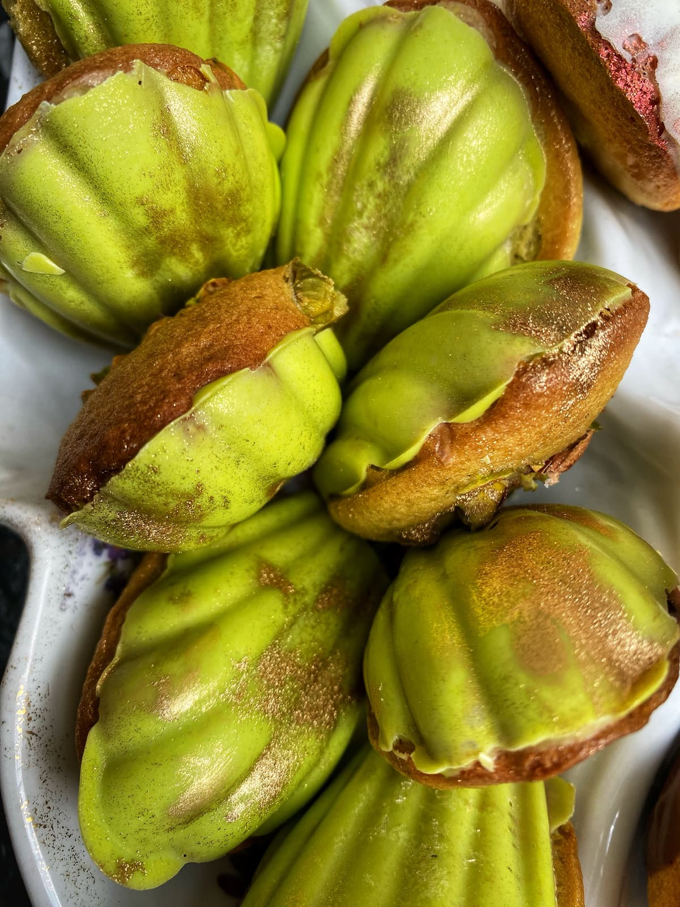
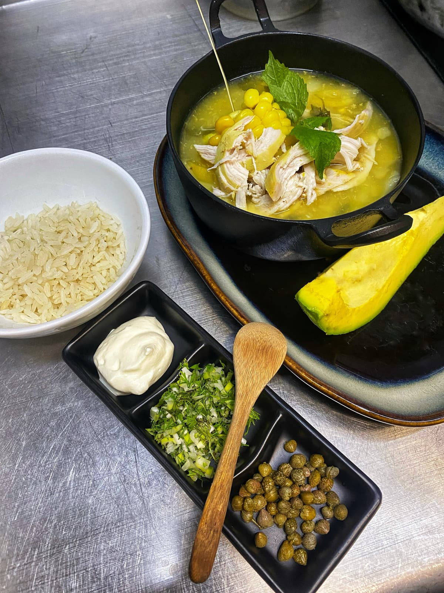
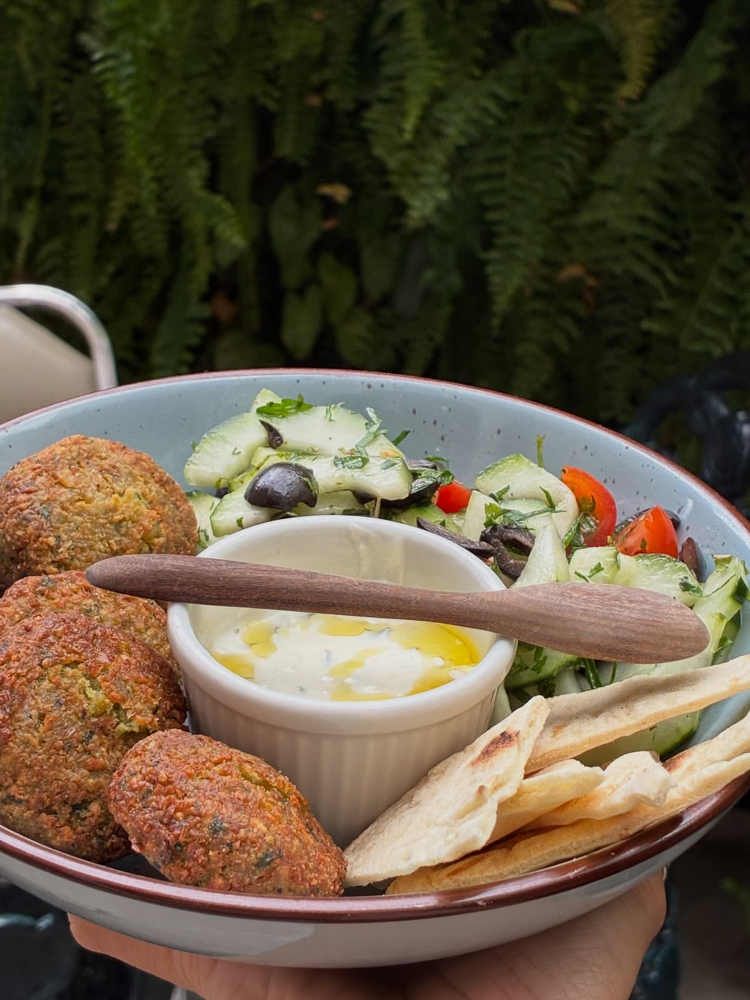
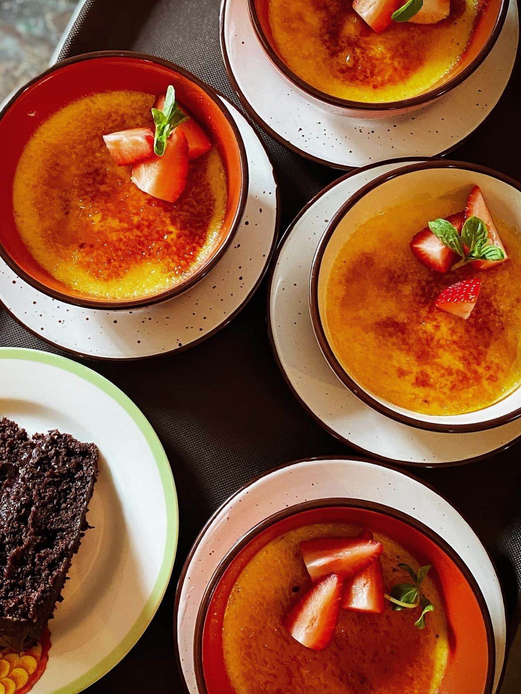

Un jardín parisino detrás de una puerta en Teusaquillo
Cocina hecha en casa, pastelería propia y madeleines bañadas en chocolate. En el barrio La Magdalena, junto a la galería Mor-Charpentier.

- Premios La Barra 2024 Mejor restaurante de comida casual del país
- 4,6 en Google Con 174 reseñas de quienes ya pasaron la puerta
- Álbum de Teusaquillo Una de las historias de emprendimiento de la localidad

Especial colombiano de noviembre
Ajiaco santafereño
Cada miércoles, con unidades limitadas
Reservar el especialMadeleine es Magdalena en francés
Abrimos el 19 de enero de 2021 en La Magdalena, un barrio de casas cuidadas y calles tranquilas donde se siente otra época. Donde estaban el garaje y el patio de la casa hoy hay un jardín interior inspirado en los cafés de París.
La cocina la dirige la chef Andrea Mor. La casa la compartimos con la galería Mor-Charpentier, fundada en París por Alex Mor, su hermano. Por eso se come con arte alrededor.
En el segundo piso está la Tienda de Abalorios, con diseño y talento colombiano y los productos de Miss Mor.
«Una calle no comercial, un lugar casi imperceptible que genera una gran sorpresa cuando pasas la puerta.»


Lo que pasa en el jardín
Conversatorios, brunch con propósito y música en vinilo. Las fechas se confirman por WhatsApp.
Celebre en el jardín o lleve la Madeleine a su oficina
Cumpleaños, reuniones de empresa, lanzamientos y cenas privadas entre obras de arte. También preparamos catering con la misma cocina hecha en casa.
Cuéntenos lo básico y le respondemos por WhatsApp con una propuesta.
Calle 38 #16-25, La Magdalena
Teusaquillo, Bogotá. Busque la puerta en una calle residencial: el jardín está adentro.
Desayunos de 9:00 a. m. a 12:00 m. Petit du Jour de 12:00 m. a 2:00 p. m.